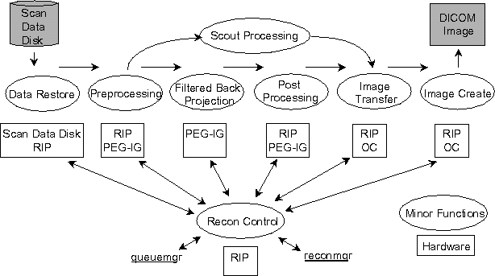
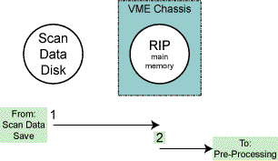
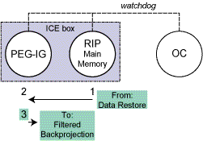
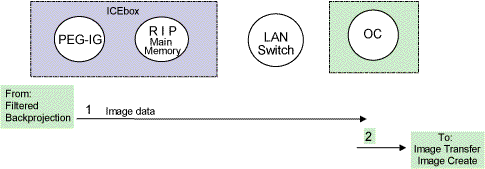
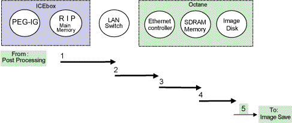
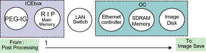
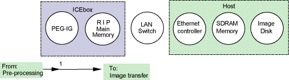
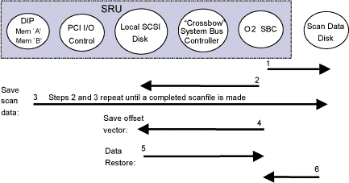

Proprietary to General Electric
Direction 5114043-800, Rev# 9
LightSpeed 3.X Service Methods (Advanced)
Proprietary to General Electric |
Illustration 1: Image Generation Overview

The beginning of the reconstruction process occurs once enough scan data (from Scan Data Save) is on the Scan Data Disk to create projection data.
Illustration 2: Data Restore - Behavioral Signal and Process flow Diagram

For a block diagram of the Data Restore function, click on the PDF icon, below.
Media File 1: Data Restore Block Diagram (GOC1)

Table 1: Data Restore - Functional Operation & Troubleshooting
| Signal Flow # | Software Function | Associated Errors | FRU(s) Involved |
|---|---|---|---|
| 1 | Scan Data Disk, RIP | ||
| 2 | Refer to Pre-Processing minor function | n/a | |
ReconDataPath
RIP Diags
The PEG-IG pulls blocks of scan data out of the RIP’s main memory through the VME bus. Prior to preprocessing, each view’s checksum is checked against the checksum created during Data Restore.
Illustration 3: Preprocessing - Behavioral Signal and Process Flow Diagram

For a block diagram of the Preprocessing function, click on the PDF icon, below.
Media File 2: Image Generation Block Diagram (GOC1)

Table 2: Preprocessing - Functional Operation & Troubleshooting
| Signal Flow # | Reporting Host | Software Process | Software Function | Associated Errors | FRU(s) Involved |
|---|---|---|---|---|---|
| watchdog | procICE | procICE sends ping messages attemping to talk to the RIP (every 15sec) | 260005002 | OC, PEG-IG, RIP & LAN | |
| 1 | sdcctrl | prep | PEG-IG pulls data from RIP using the function: dx_modify | 230016024 | |
| 2 | DSP | prep | Verify Checksum. Function: EM_PREP_VIEW_LOOP | 230016024 | PEG-IG, RIP |
| 3 | n/a | n/a | Refer to Filtered Back projection minor function | ||
ReconDataPath
RIP Diags
PEG-IG Diags
LAN Diags
The PEG-IG performs convolution (filtering) followed by back projection. After all views have been back projected, the PEG-IG generates a “back projection done” message to the RIP. This starts the postprocessing phase.
Table 3: Filtered Back Projection - Functional Operation & Troubleshooting
| Software Function | Associated Errors | FRU(s) Involved |
|---|---|---|
| Receiving view blocks into input FIFO | 242605 | PEG-IG |
| all views consumed "back projection done" | 230003020 | PEG-IG |
| Refer to Post-Processing minor function | n/a | |
ReconDataPath
RIP Diags
IG Report Self Test
Illustration 4: Post Processing - Behavioral Signal and Process Flow Diagram

For a block diagram of the Preprocessing function, click on the PDF icon, below.
Media File 3: Image Generation Block Diagram (GOC1)

Table 4: Post Processing - Functional Operation & Troubleshooting
| Signal Flow # | Reporting Host | Software Process | Software Function | Associated Errors | FRU(s) Involved |
|---|---|---|---|---|---|
| 1 | RIP | icProxy | Image out of the PEG-IG (checksum failure) | 230007513 | PEG-IG, RIP |
| 2 | n/a | n/a | Refer to the Image Transfer & Image Create minor functions | n/a | |
ReconDataPath
RIP Diags
LAN Diags
At completion of Post Processing, image pixel data is sent out of the RIP’s memory via Ethernet (100BaseTx) through the LAN Switch though the ethernet controller in the OC Computer, into memory, where image is checksum compared, then onto the OC Image Disk. The Image Create minor function describes how the OC controls the receiving of the image.
Illustration 5: Image Transfer - Behavioral Signal and Process Flow Diagram

For a block diagram of the Image Transfer function, click on the PDF icon, below.
Media File 4: Image Transfer Block Diagram (GOC1)

Table 5: Image Transfer - Functional Operation & Troubleshooting
| Signal Flow # | Reporting Host | Software Process | Software Function | Associated Errors | FRU(s) Involved |
|---|---|---|---|---|---|
| 1 | RIP | icProxy | Ethernet communication | 230007511 | RIP, LAN switch, SBC |
| 1 | RIP | icProxy | Image out of RIP’s memory to LAN switch | 230007510 | RIP, LAN Switch |
| 2 | OC | imagecreate | LAN Switch to ethernet control. | LAN Switch | |
| 3 | OC | imagecreate | Ethernet control to SDRAM Memory | Memory, Ethernet Control | |
| 4 | OC | imagecreate | SDRAM Memory to Image disk | 200002720 | LAN Switch, RIP |
| 5 | n/a | n/a | Refer to Image Save minor function | n/a | |
ReconDataPath
RIP Diags
LAN Diags
OC ide level Diagnostics
| NOTE: | LAN switch is common to software processes involved. For LAN suspected failure, try swapping ports on LAN Switch |
Illustration 6: Image Create - Data Flow Diagram

Table 6: Image Create - Data Flow & Troubleshooting
| Signal Flow # | Reporting Host | Software Process | Software Function | Associated Errors | FRU(s) Involved |
|---|---|---|---|---|---|
| 1 | RIP | icProxy | Ethernet communications | 230007510 | LAN Switch, or cable, RIP |
ReconDataPath
RIP Diags
LAN Diags
Scout has exactly the same data restore path (see Image Generation/Data Restore) and image install path (see Image Generation/Image Transfer and see Image Generation/Image Create) as all the other recon modes, except that the IG is not involved. That is, after the data is processed in SDC, it will be directly sent DMA (direct memory access) from SDC internal memory to the RIP system memory, where IC proxy will forward data to Image Transfer.
Illustration 7: Scout Processing - Behavioral Signal and Process Flow Diagram

Table 7: Scout Processing - Functional Operation & Troubleshooting
| Signal Flow # | Reporting Host | Software Process | Software Function | Associated Errors | FRU(s) Involved |
|---|---|---|---|---|---|
| 1 | PEG-IG | sdc_post | data transfer from PEG-IG to RIP | 230016024 | PEG-IG, RIP |
ScanDataPath
RIP Diagnostics
There are two main functions in Scan File Management: saving scan data and restoring scan data.
At the start of a scan, a scan file is allocated and a scan header is written to the Local SCSI Disk. As the raw data comes into the DIP memory, the DIP board verifies the integrity of the data and interrupts the SRU when one bank of the DIP memory is full. The SRU then initiates the data write from DIP memory to the Scan Data Disk. The scan header on the Local SCSI Disk (system disk) is periodically updated to indicate how much raw data has been written to the Scan Data Disk. The process continues until all the scan data is collected, then there is a final write to the Scan Header indicating that all the raw data is present on the Scan Data Disk making a complete scanfile.
During scanning, offset views are saved in the scan file as described above. For image reconstruction an offset vector is needed using the collected offset views. To facilitate faster retro reconstruction, during prospective reconstruction an offset vector is written back to the scanfile. The saving of the offset vector is done by initiating a write from physical SBC memory to the Local SCSI Disk.
The retrieval of scan data starts with a read of the scan header from Local SCSI disk to SBC physical memory. Based on the data views requested, the software then initiates a read of the raw scan data from Scan Data Disk to SBC physical memory.
Illustration 8: Scan File Management - Behavioral Signal and Process Flow Diagram

Table 8: Scan File Management - Functional Operation & Troubleshooting
| Signal Flow # | Reporting Host | Software Function | FRU(s) Involved |
|---|---|---|---|
| 1 | SBC | sbc allocates scan file | SRU, Local Disk |
| 2 | SBC | write scan header to Local Disk | SRU, Local Disk |
| 3 | SBC | write scan data to Scan Data Disk (includes offset views) | DIP, SRU, Scan Disk |
| 4 | SBC | write offset vector to scan header | SRU, Local Disk |
| 5 | SBC | read scan header to sbc memory | SRU, Local Disk |
| 6 | SBC | read scan data to SBC memory | SRU, Local Disk |
Scan Data Path
DIP diagnostic
Recon Data Path
Data Flow Description: The two main processes involved in recon control are queuemgr and reconmgr. The queuemgr process receives all recon requests and makes sure that reconmgr creates the images in the correct order. The queuemgr process is the main interface between recon and the rest of the system.
The reconmgr process pulls image requests from queuemgr sequentially and manages the reconstruction process in a pipeline fashion. The output of recon is a DICOM file (created on the OC) that can be installed in the image database.
The basic flow of recon is as follows:
image request received by queuemgr
queuemgr queues the request
queuemgr notifies reconmgr
reconmgr reads the next request in the queue
reconmgr processes request
reconmgr sends image header and image pixel data to imagecreate on OC
reconmgr tells queuemgr image is being created
imagecreate creates a DICOM file
queuemgr is notified by OC when image is installed in database
queuemgr removes image queue request
Since reconmgr is pipelined, it can process more than one image at time. Queuemgr makes no assumptions about the depth of the reconmgr pipeline and allows reconmgr to pull as many image requests as it can handle.
Image requests are generated only when there is enough scan data for the image on disk. During scanning, image requests are generated as soon as enough scan data is available to disk so that image generation can begin as soon as possible. A basic image request consists of the following:
a scan key to indicate where the scan data is located on disk
an image key for pre-allocated space in the image database
scan-independent reconstruction parameters
All image rquests go through queuemgr and are queued into one of four queues according to their priority. The priority and contents of the queues are defined as:
Table 9: Recon Control - Image Request Priorities
| PRIORITY | QUE # | IMAGE REQUEST |
|---|---|---|
| Highest | 1 | Scout |
| 2 | Priority Recon | |
| 3 | Prospective Axial & Helical | |
| Lowest | 4 | Retrospective Axial & Helical |
Images are grouped by exam in each queue, and exams are queued in a last-in first-out (LIFO) basis. The images within each exam are queued in a first-in first-out (FIFO) basis. The queuemgr process will notify reconmgr of new image requests in the queue as they come in.
An image is not removed from the queue until it has been installed in the image database. If an image fails to recon or install, queuemgr will allow recon to reprocess the image once more. If the image fails twice, it is put into a suspended state [error 230009013] and does not get removed from the queue. Suspended images will not be retried until they are un-suspended by the operator.
If five images are suspended in sequence, queuemgr will shutdown and not allow recon to process any more images. When the queue is shut down, images can be still be queued, but new images will not be reconstructed until the operator clicks resume in the recon management window.
When each image is queued, a file is created on the SBC in the /usr/g/queue directory. The main purpose of this file is to ensure that an image is made. This file maintains the image request information in the event of an unexpected shutdown or power failure. The file also allows suspended images to be maintained across system restarts so that the images can be reconstructed (un-suspended) once the system is serviced.
Image requests on the queue are handled by reconmgr whenever there is space in the recon pipeline. When reconmgr retrieves an image request, queuemgr starts a timer to wait for an acknowledge from reconmgr. The acknowledge tells queuemgr the results of reconstruction as follows:
completed
failed
canceled
Completed means that the DICOM image data has been transferred to the OC, but not necessarily installed. In the image database. Queuemgr then starts a timer to wait for the an indication that the image has installed. Only after the DMS process says the image is installed is the image removed from the queue and its file deleted on /usr/g/queue.
Failed means that the image could not be reconstructed because one or more recon processes encountered an error of some kind while reconstructing the image. Failures can be flagged as non-retriable.
Canceled means that a high-priority image forced recon to stop processing the image in order to handle the higher priority image. For instance, this happens normally when a scout image is queued while the recon pipeline is full of images from a previous series.